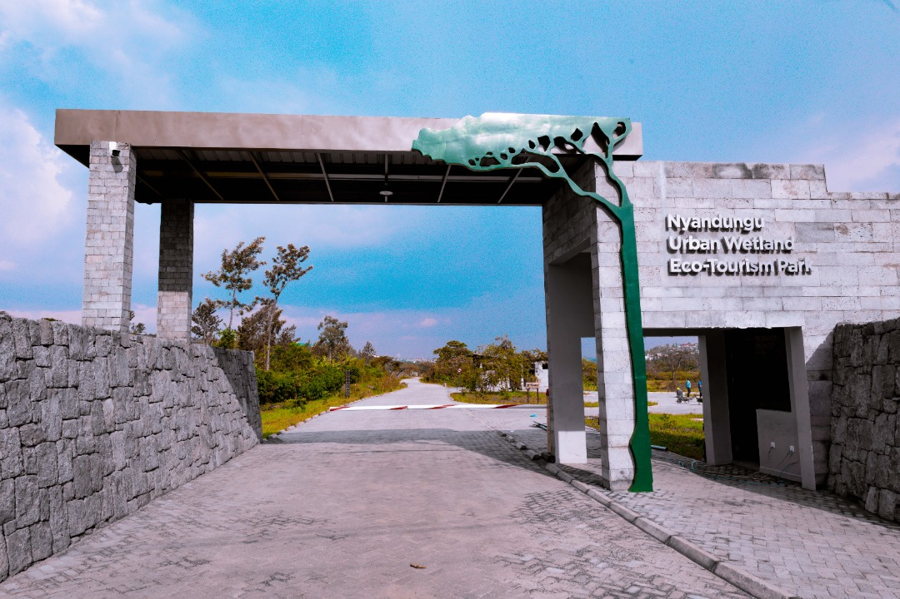
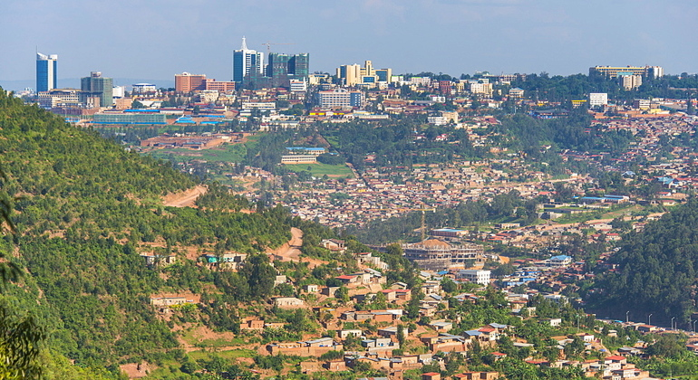
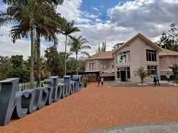
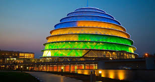
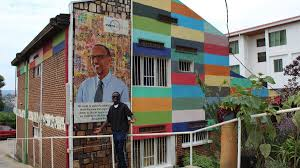
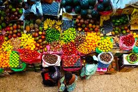

Beautiful places to visit in Kigali.

A green urban wetland perfect offering a peaceful retreat from the bustling city.

Hike Mount Kigali for stunning panoramic views of the city and surrounding landscape.

Learn about the history and impact of the 1994 genocide through educational exhibits and memorial gardens.

Iconic building hosting conferences, events and amazing experiences.

Experience the vibrant arts scene of Kigali with its dynamic exhibitions and performances.

The biggest market in Kigali, offering a wide range of local products and traditional crafts.
| Destination | Location | Destination From Kigali City | Best Time to Visit | Highlights |
|---|---|---|---|---|
| Nyandungu Eco Park | Gasabo | 12Km | All Year | Natural walks, Bird watching |
| Mount Kigali | Gasabo | 15Km | June - september | Hiking trails, panoramic views |
| Kigali Genocide Memorial | Gisozi | 8Km | All Year | Educational exhibits, memorial gardens |
| Kigali Convention Center | Kacyiru | 6Km | All Year | Event, Architecture |
| Inema Arts Center | Kacyiru | 7Km | All Year | Art exhibitions, cultural performances, Exhibition Spaces |
| Kimironko Market | Kimironko | 5Km | All Year | shopping, local crafts |